Where the menu-bar widgets live
Small, sharp tools for the macOS menu bar.
Ten standalone apps, each doing one job and staying out of the way. Built on two open-source Swift frameworks. No SwiftBar, no Electron, no subscriptions.
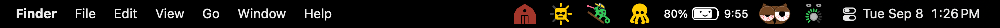
The widgets
Every one is a real .app with its own icon and Start-at-Login toggle. Click a card to learn more.
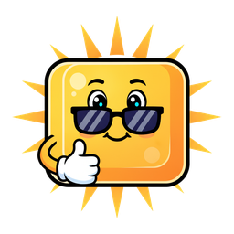
KeyLight
StatusItemKitHotkeyKit
Remaps Ctrl + the brightness keys to keyboard-backlight up and down, with a slider in the menu and a keycap in the bar whose rays light with the level. A drop-in replacement for using BetterTouchTool for just that.
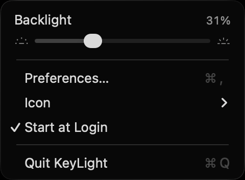
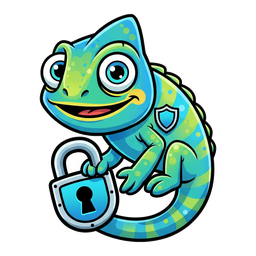
VPN & DNS
StatusItemKit
One chameleon for Mullvad VPN and Tailscale: green with spots and a looped tail when Tailscale is on, green in a yellow hard hat with its tongue out when the Mullvad tunnel is up. A sectioned menu covers both, and a watcher keeps DNS working when the two run at once.
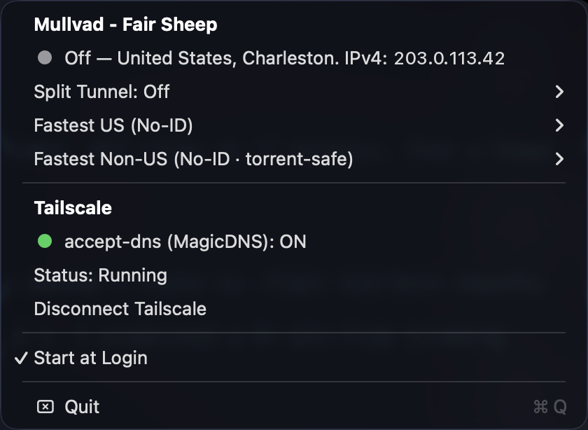
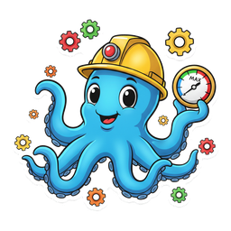
Process Monitor
StatusItemKit
Counts the processes you own and warns before you hit kern.maxprocperuid, the limit that silently makes fork() fail in every app. The octopus grows arms and heats from green to red as you close in.
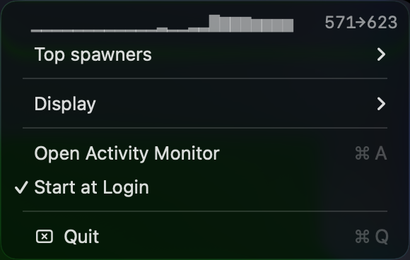
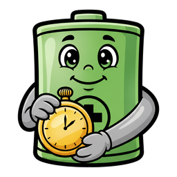
Battery Time
StatusItemKit
Puts the battery time-remaining estimate back in the menu bar, where Apple removed it in 2016, and updates the instant you plug in or unplug. The battery has a face.
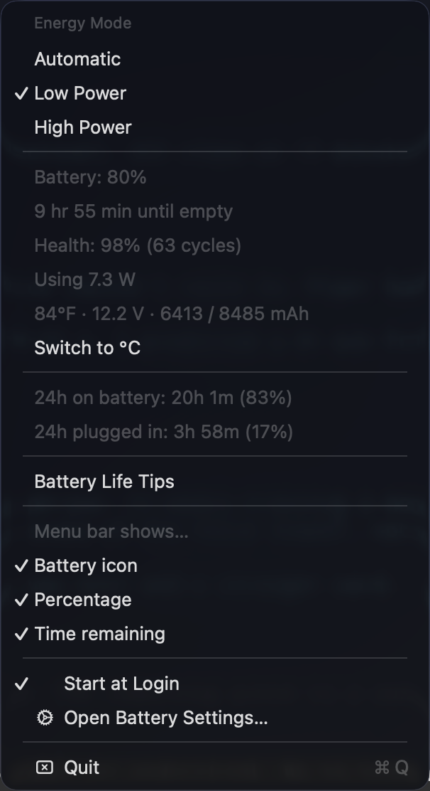
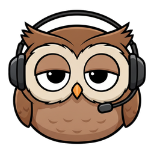
Claude Usage
StatusItemKit
Claude Code plan limits and reset timers, token spend by day and model from your local transcripts, and which sessions are running, all from the menu bar. The owl's eyelids droop as each window fills.

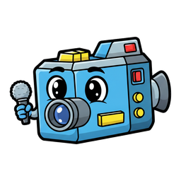
MacRecorder
StatusItemKitHotkeyKitScreenCaptureKit
Screen recording with system audio, the one thing QuickTime can't do, on ⌘⇧5. Recordings go straight to Downloads with no preview step. The camcorder's record light comes on while recording.
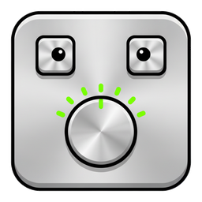
Apollo Monitor
StatusItemKitHotkeyKit
An Apollo interface's face whose tick ring is the level, plus a slider, for an Apollo audio interface's monitor output, with the Mac's volume keys remapped to 1 dB steps and a volume overlay macOS can't provide.
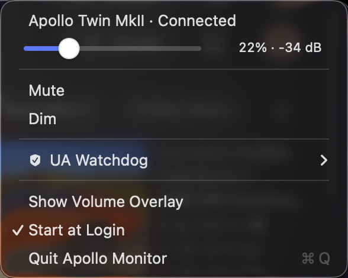
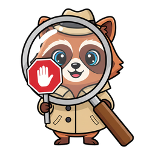
Media Tracking Killer
StatusItemKit
Periodically stops Apple's media-analysis daemons so they stop scanning your library and burning CPU in the background. The raccoon's eyes glow red while it is on watch.
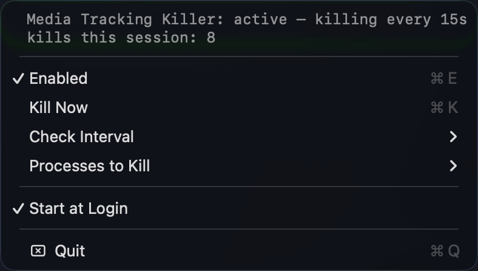
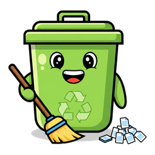
Download Recycler
StatusItemKit
Sweeps old files from Downloads into the Trash once a day. Restorable, never a hard delete. Someone lives in the bin.
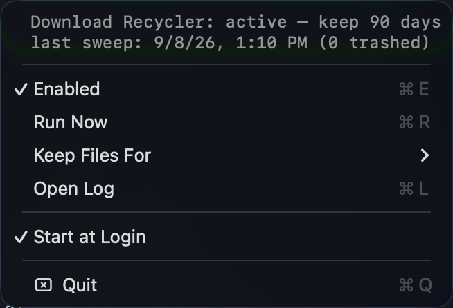
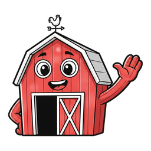
Barn
StatusItemKit
Hides the menu-bar icons you never click. It hides by width alone instead of moving other apps' icons, so it can never strand one like Ice Menubar Manager does. The other widgets live in it: click the barn and they come out with their real menus.
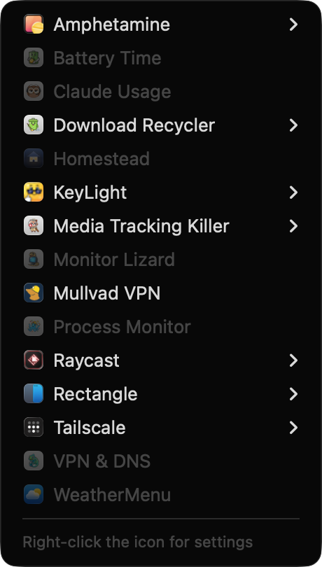
The frameworks underneath
Two small Swift packages. Every widget above is built from them, and so can yours be.
StatusItemKit
SwiftAppKit
The shell for a standalone menu-bar app: the status-item lifecycle, a polling loop, a lazily rebuilt menu, text and icon rendering, Start at Login, notifications, data-driven meter icons, and a build-and-sign script that produces a proper .app.
HotkeyKit
SwiftCGEventTap
A reusable engine for intercepting global keyboard and media keys, matching them against declarative bindings, and remapping or swallowing them.
Why not SwiftBar?
Several of these started as SwiftBar plugins. They were rewritten as standalone apps because the plugin model kept getting in the way.
- 01
No host process
Each widget is its own
.appwith its own icon, process, and Start-at-Login toggle. Nothing to install first, and one widget hanging can't take the others down. - 02
Real menus, not rendered stdout
Native
NSMenus with sliders, checkmarks, submenus, custom views, and the system colour picker, instead of whatever a text protocol can express. - 03
Event-driven, not re-run on a timer
IOKit power notifications, a
CGEventTap,mullvad status listen, ScreenCaptureKit: things a shell script can't touch, reacting the instant something changes. - 04
The icon stays put
A native status item keeps its position; a plugin's refresh re-creates its item and bounces it around under menu-bar managers. Stable signing also keeps Accessibility grants across rebuilds.
Install one
Every app ships an install.sh that builds the bundle, links it into ~/Applications, and launches it. StatusItemKit sits beside it as a sibling checkout.
macOS 13 or later and the Xcode Command Line Tools.
git clone https://github.com/nicholaspsmith/StatusItemKit.git
git clone https://github.com/nicholaspsmith/keylight-menubar.git
cd keylight-menubar && ./install.sh